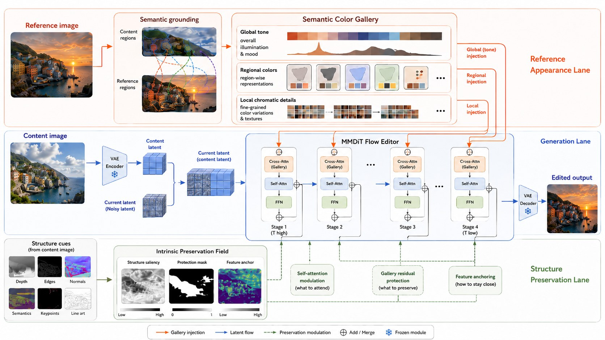
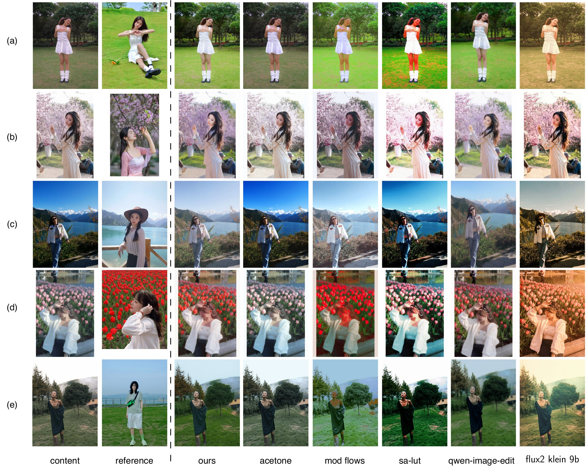

Reference-Based Color Transfer
SAGE-Color
Semantic Appearance Grounding for Reference-Based Color Transfer
SAGE-Color transfers the color appearance of a reference image while preserving the content image's geometry, identity, layout, and fine structure. The model treats the reference as chromatic evidence, not as a spatial template.

Method
The content image provides spatial authority through latent concatenation. The reference image is converted into a Semantic Color Gallery with global, regional, and local chromatic evidence. A content-only Intrinsic Preservation Field attenuates unsafe reference residuals in structure-sensitive regions.
Results
On Colorist-Bench-1K, SAGE-Color improves reference color fidelity while keeping content-compatible reconstruction.

Code Release
The repository contains single-checkpoint inference, the recommended two-stage training recipe, environment files, setup scripts, and this project page. It does not include the paper source, private datasets, model checkpoints, or generated outputs.
git clone https://github.com/chenxib/sage-color.git
cd sage-color
conda env create -f environment.yml
conda activate zhuise-color-edit
bash scripts/bootstrap_external_diffusers.sh
pip install -r requirements.txt
# Put the released checkpoint at checkpoints/sage-color-final.pt
CUDA_VISIBLE_DEVICES=0 \
CONTENT_IMAGE=path/to/content.png \
REFERENCE_IMAGE=path/to/reference.png \
OUTPUT_IMAGE=outputs/sage-color/sample.png \
bash scripts/final_model/bash/infer.sh